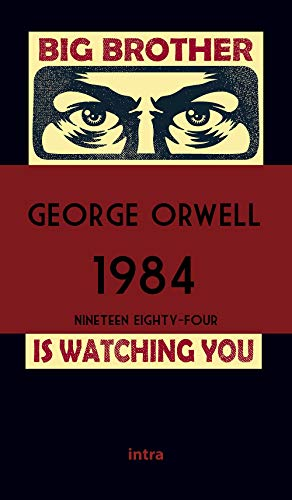
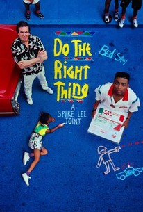

My Family
I grew up in a Brady Bunch family: my divorced dad married my divorced step-mom. My dad had two sons, me and my brother, and my step-mom has three sons. My dad and step-mother got together when I was 12 and my little brother was 9. We all moved in together in a big old house in southern New Hampshire. We were latch-key kids because both parents worked: each of us cooked during the week and we all rode bikes and played outdoors. Since it was rural, most of us got our drivers licenses and bought cheap cars as soon as we could. There is more to my story, but I will get to that later.
Here are some of my favorite foods:
- French Roast Coffee
- New York style thin-crust pizza
- New Haven style thin-crust pizza
- Chicago style thick crust pizza
- Croissants and other pastries
- Thai noodle dishes
Here are some of my favorite books

- 1984, by George Orwell
- Down and Out in Paris and London, by George Orwell
- Neuromancer, by William Gibson
- Peripheral, by William Gibson
- Wingborn, by Martin Caidin
- The Forever War, by Joe Haldeman
- The Immortal Life of Henrietta Lacks, by Rebecca Skloot
- The Pillars of the Earth, Ken Follett
- City, by David Macaulay
Some amazing websites:
Some movies I love

- Limbo, by John Sayles
- Animal House, by John Landis
- Brazil, by Terry Gilliam
- Monty Python's Life of Brian
- Do the Right Thing, by Spike Lee
- The Color of Money, by Martin Scorsese
- Drugstore Cowboy, by Gus Van Sant
- The Wall, by Alan Parker
- Raiders of the Lost Ark, by Steven Spielberg
- Casablanca, by Michael Curtiz
Some musicians I love

- Led Zeppelin
- Clutch
- Ramones
- Peter Gabriel
- Jimmy Cliff
- Rage Against the Machine
- Audioslave
- Talking Heads